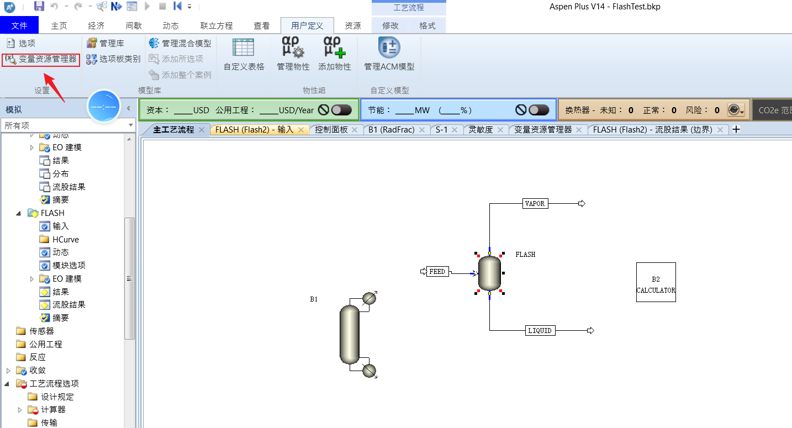
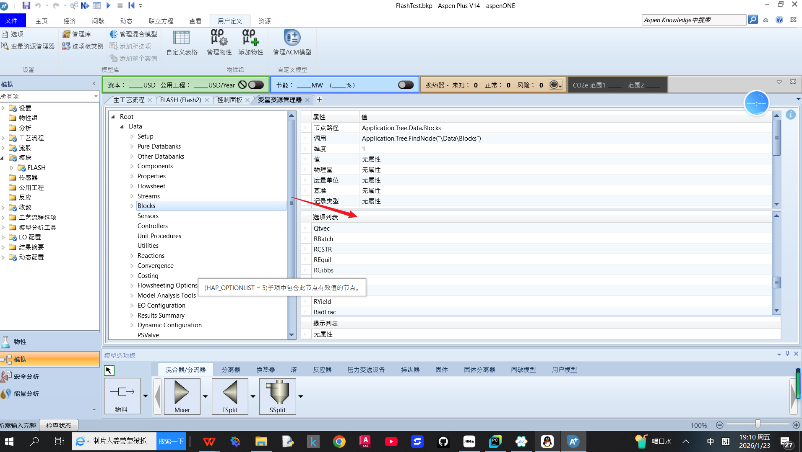
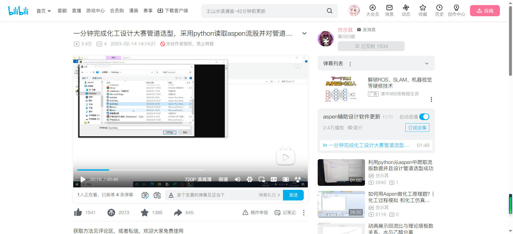

各位好，这个文档主要来说明Python与Aspen联动的时候一些问题和答疑，之前第一章和第二章用到了一个叫做AspenPy的模块，不是原生态的(但是原理几乎一样),同时，在我做能量衡算的时候遇到了一些问题，这些问题网上几乎都没有侧重来讲，比如如何控制单位一样，以及Aspen与可迭代器的关系。而今天的内容是直接用原生态wincom32接口来实现用Python和Aspen通过COM接口的一些转化。
本文档开源，可以进行分享！

第一部分 之前内容复习及其快速浏览¶
0-变量浏览器


1-Aspen怎么启动:
两点
1.这个程序只是启动aspen，并不是aspen的某一个特定文件
2.版本其实无所谓
或者
2.启动哪个文件?
os.path.abspath是相对路径转换成绝对路径
这个aspen.InitFromArchive2括号里面要求的是绝对路径，而你假设只有相对路径，则可以这么填，如果你有绝对路径，则
3.Aspen是否可视化
注意:不管是0还是1，你这个Aspen都是有后台进程
4.关闭:
5.如何获取一个bkp的物质名字

concent=Aspen.Tree.FindNode("\Data\Components\Specifications\Input\CASN")
Concent_all=[j.Name for j in concent.Elements]

同理，如果是想获得CAS号就直接
concent=Aspen.Tree.FindNode("\Data\Components\Specifications\Input\CASN")
Concent_all=[j.Value for j in concent.Elements]
第二部分 一些比较偏的问题及其解决方法¶
这次主要是讲解三个问题
一.Aspen不同文件有不同的单位集，怎么切换单位
方法:
1.找到合适单位集，然后进行转化
2.运行，如果不运行的话不行
aspen.Tree.Elements('Data').Elements("Setup").Elements("Global").Elements("Input").Elements("INSET").Value="MET"
aspen.Run()
二.怎么获取流股数据
1.获取流股名字(使用Name)
两个方式:
(1).通过FindNode直接获取
Name_Block_All=aspen.Tree.FindNode("\Data\Streams")
Name_Block_List=[i.Name for i in Name_Block_All.Elements]
这个是Python的语法糖，相当于
Name_Block_All=aspen.Tree.FindNode("\Data\Streams")
Name_Block_List=[]
for i in Name_Block_All.Elements:
Name_Block_List.append(i.Name)
这个可以当作使用了For循环的迭代思想
aspen.Tree.FindNode().Elements是不是可迭代对象？
(2)可以用elements
Name_Block_All=aspen.Tree.Elements("Data").Elements("Stream")
Name_Block_List=[i.Name for i in Name_Block_All.Elements]
(3)通过Item列表
Name_Block_List=[]
streams_node=aspen.Tree.Elements("Data").Elements("Stream")
for i in range(1,streams_node.Elements.Count+1):
Name_Block_List.append(streams_node.Elements.Item(i).Name)
这个等同于
Name_Block_List=[]
i=0
while i<streams_node.Elements.Count:
Name_Block_List.append(streams_node.Elements.Item(i).Name)
i+=1
或者由于列表的思想,我们可以再转化
elements = list(Name_Block_All.Elements) # 一次性固化
for i in range(len(elements)):
print(elements[i].Name)
或者,迭代器思想
it = iter(Name_Block_All.Elements)
while True:
try:
elem = next(it)
except StopIteration:
break
print(elem.Name)
2.获取流股的的输入数据
Volumn_Flow=Aspen.Tree.Elements("Data").Elements("Streams").Elements(Stream_Name).Elements("input").Elements("VOLFLMX2").Value
3.获取流股的输出数据
Volumn_Flow=Aspen.Tree.Elements("Data").Elements("Streams").Elements(Stream_Name).Elements("Output").Elements("VOLFLMX2").Value
4.修改流股的输入数据
Aspen.Tree.Elements("Data").Elements("Streams").Elements(Stream_Name).Elements("input").Elements("VOLFLMX2").Value=0.06
5.修改流股的输出数据
Aspen.Tree.Elements("Data").Elements("Streams").Elements(Stream_Name).Elements("Output").Elements("VOLFLMX2").Value=0.06
三.怎么获取模块的输出数据
1.获取模块的输入数据
首先，这里的大小写都一样,都不影响结果
两种方式，第一种是Elements形式:
第二种是FindNote形式
2.获取模块的输出数据
四.怎么创建和删除流股,模块,流股和模块之间怎么连接起来
1.模块
创建模块:Add()
BlockName="0101"
EquipmentType=["RCSTR", "RPlug", "DSTWU", "Flash2", "Mixer", "Heater", "Radfrac", "Splitter", "RYield]#从中选一个
All=BlockName+"!"+"RPlug"
Aspen.Tree.Elements("Data").Elements("Blocks").Elements.Add(All)

这是设备类型的选项，可以对这个进行查看
删除模块:Remove()
2.流股
创建流股:Add()
StreamName="0101"
EquipmentType=["MATERIAL", "HEAT", "WORK","POWER"]#从中选一个
All=StreamName+"!"+"MATERIAL"
Aspen.Tree.Elements("Data").Elements("Streams").Elements.Add(All)


删除流股:Remove()
连接流股:Add()这里虽然看似是连接流股，实际上用到的和模块有关
Aspen.Tree.Elements("Data").Elements("Blocks").Elements("Ports").Elements(Portname).Elements.Add(Streamname)
port_Name="D(OUT)" , "B(OUT)", "F(IN)"

断开流股:
Aspen.Tree.Elements("Data").Elements("blocks").Elements(Blockname).Elements("Ports").Elements(Portname).Elements.Remove(Streamname)

重要的点
大小写并不影响
第三部分:可能用到的方法及其保存方法¶
杂项指令:
1.显示Aspen的文件地址
2.抑制窗口
3.运行模拟
4.停止模拟
5.重置模块
6.模块重置#已经删除
7.流股重置#已经删除
保存:
8.保存成apw，有所有的输入及其输出
9.保存当前 Aspen 模拟（.apw）为新名称，而不覆盖原文件。 参数： Filename：指定文件名的字符串。 overwrite：当文件已存在时是否覆盖？True 或 False，默认值为 True
10.保存成bkp文件
11.保存成.rep或者.txt文件
12,保存成.sum
13.保存成.inp
14.保存每次模拟的信息，错误和警告:
15.导出仿真报告
16.导出压力驱动的模拟报告
17.导出流程图的绘图
各位可以加入这个交流群一起交流！

一些比较好的化工链接:
1.CEPD化工社区:
2.我的公众号:MrsJone的破站(会分享关于Aspen和Python的一些文章)
3.世示其up主的化工设计大赛管道选型,这个exe文件可以找up主三连获取

4.能量衡算系统-可以用于化工设计大赛:
进我那个群自领

5.AspenPy模块的github链接-我一开始用的Aspen和Python连接的库，可以给原作者star
https://github.com/YouMayCallMeJesus/AspenPlus-Python-Interface